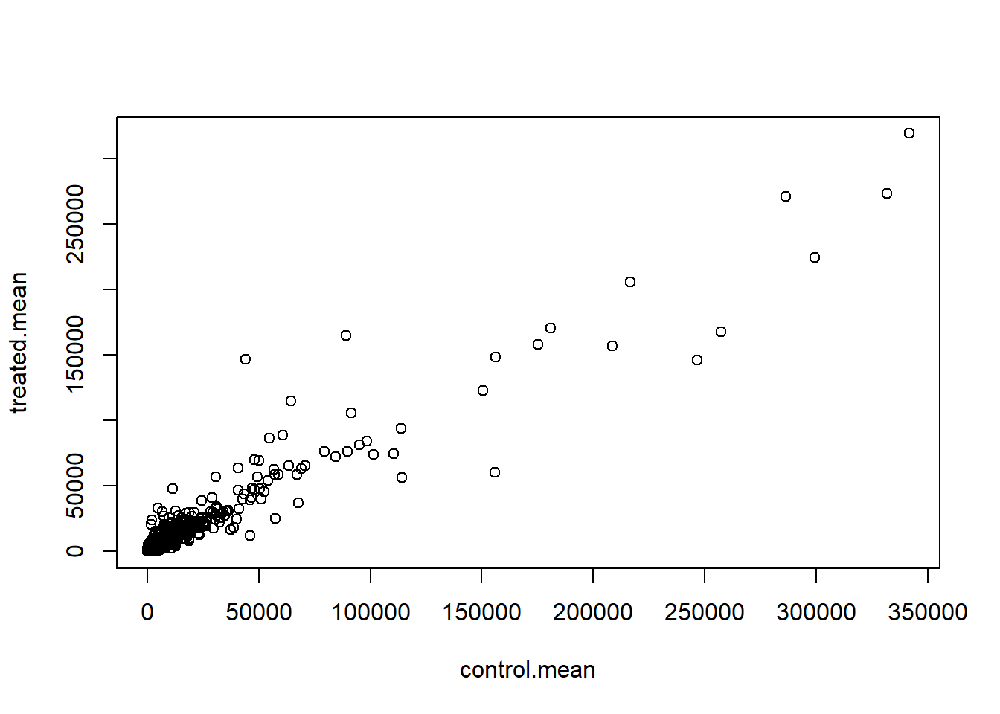
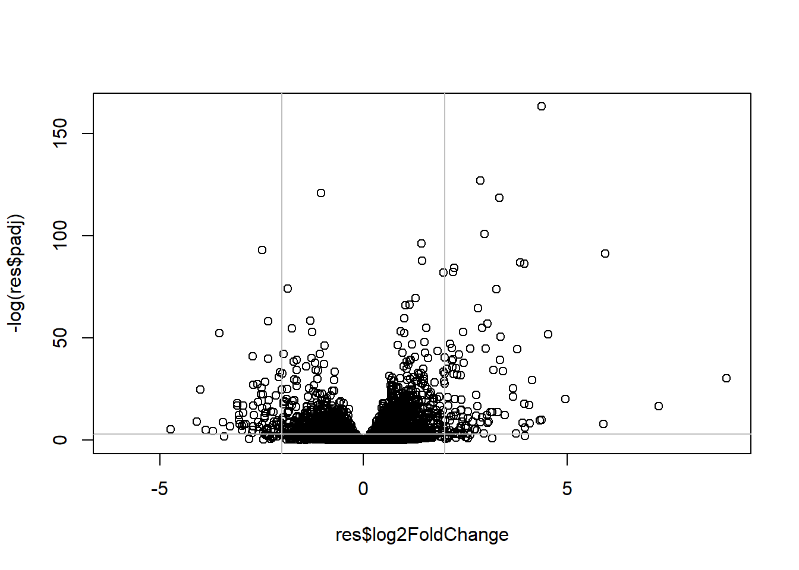

counts <- read.csv("airway_scaledcounts.csv", row.names=1)
metadata <- read.csv("airway_metadata.csv")Lab13
head(counts) SRR1039508 SRR1039509 SRR1039512 SRR1039513 SRR1039516
ENSG00000000003 723 486 904 445 1170
ENSG00000000005 0 0 0 0 0
ENSG00000000419 467 523 616 371 582
ENSG00000000457 347 258 364 237 318
ENSG00000000460 96 81 73 66 118
ENSG00000000938 0 0 1 0 2
SRR1039517 SRR1039520 SRR1039521
ENSG00000000003 1097 806 604
ENSG00000000005 0 0 0
ENSG00000000419 781 417 509
ENSG00000000457 447 330 324
ENSG00000000460 94 102 74
ENSG00000000938 0 0 0head(metadata) id dex celltype geo_id
1 SRR1039508 control N61311 GSM1275862
2 SRR1039509 treated N61311 GSM1275863
3 SRR1039512 control N052611 GSM1275866
4 SRR1039513 treated N052611 GSM1275867
5 SRR1039516 control N080611 GSM1275870
6 SRR1039517 treated N080611 GSM1275871Q1. How many genes are in this dataset?
nrow(counts)[1] 38694Q2. How many ‘control’ cell lines do we have?
table(metadata$dex)
control treated
4 4 ###check on match of metadata and coldata
colnames(counts)[1] "SRR1039508" "SRR1039509" "SRR1039512" "SRR1039513" "SRR1039516"
[6] "SRR1039517" "SRR1039520" "SRR1039521"metadata$id[1] "SRR1039508" "SRR1039509" "SRR1039512" "SRR1039513" "SRR1039516"
[6] "SRR1039517" "SRR1039520" "SRR1039521"metadata$id==colnames(counts)[1] TRUE TRUE TRUE TRUE TRUE TRUE TRUE TRUEif you want to know that all elements of a vector are TRUE we can use the ‘all()’ function
all(metadata$id==colnames(counts))[1] TRUE##Analysis
I want to start by comparing “control” and “treated” columns. to this will find find the average for each gene(row) in all “control” columns. then I will find the average in the treated columns. then I will compare them.
let’s extract all “control” columns first
control.inds <- metadata$dex=="control"control.counts <- counts[,control.inds]Now find the mean count value per gene using the ‘apply()’ function.
control.mean <- apply(control.counts, 1,mean)Now do the same for the treated columns. i.e. find `treated.mean values.
treated.inds <- metadata$dex=="treated"treated.counts <- counts[,treated.inds]treated.mean <- apply(treated.counts, 1, mean)PUT THESE TWO MEAN VECTORS TOGETHER FOR EASE OF BOOK-KEEPING
meancounts <- data.frame(control.mean, treated.mean)
head(meancounts) control.mean treated.mean
ENSG00000000003 900.75 658.00
ENSG00000000005 0.00 0.00
ENSG00000000419 520.50 546.00
ENSG00000000457 339.75 316.50
ENSG00000000460 97.25 78.75
ENSG00000000938 0.75 0.00Let’s have a quick plot.
plot(meancounts)
plot(meancounts, log="xy")Warning in xy.coords(x, y, xlabel, ylabel, log): 15032 x values <= 0 omitted
from logarithmic plotWarning in xy.coords(x, y, xlabel, ylabel, log): 15281 y values <= 0 omitted
from logarithmic plot
we most often work in log2 units because they have a more simple interpretation
here we calculate the log2 fold-change of treated/control values and add it to our data frame of results
meancounts$log2fc <- log2(meancounts$treated.mean/meancounts$control.mean)
head(meancounts) control.mean treated.mean log2fc
ENSG00000000003 900.75 658.00 -0.45303916
ENSG00000000005 0.00 0.00 NaN
ENSG00000000419 520.50 546.00 0.06900279
ENSG00000000457 339.75 316.50 -0.10226805
ENSG00000000460 97.25 78.75 -0.30441833
ENSG00000000938 0.75 0.00 -Infthere are some funky answers in there like NaN (not a number) and -infinity that all come because I have zero count gene in my dataset
it is common practice to filter these zero count genes out before we go too deep.
to.keep.inds <- (rowSums(meancounts[,1:2]==0)==0)
mycounts <- meancounts[to.keep.inds,]
head(mycounts) control.mean treated.mean log2fc
ENSG00000000003 900.75 658.00 -0.45303916
ENSG00000000419 520.50 546.00 0.06900279
ENSG00000000457 339.75 316.50 -0.10226805
ENSG00000000460 97.25 78.75 -0.30441833
ENSG00000000971 5219.00 6687.50 0.35769358
ENSG00000001036 2327.00 1785.75 -0.38194109Q. How many genes do we have left after zero count filtering?
nrow(mycounts)[1] 21817A common threshold for calling a gene up or down is a log2 fold change of +2 or -2.
Q. How many “up” regulated genes do we have?
sum(mycounts$log2fc >=+2)[1] 314##DESeq analysis
we need to do this analysis properly with our inner stats person kept happy.
library(DESeq2)To use DESeq we need to get our input data in very particular format.
dds <- DESeqDataSetFromMatrix(countData = counts, colData = metadata, design = ~dex)converting counts to integer modeWarning in DESeqDataSet(se, design = design, ignoreRank): some variables in
design formula are characters, converting to factorsRun DESeq analysis
dds <- DESeq(dds)estimating size factorsestimating dispersionsgene-wise dispersion estimatesmean-dispersion relationshipfinal dispersion estimatesfitting model and testingGet the results
res <- results(dds)
head(res)log2 fold change (MLE): dex treated vs control
Wald test p-value: dex treated vs control
DataFrame with 6 rows and 6 columns
baseMean log2FoldChange lfcSE stat pvalue
<numeric> <numeric> <numeric> <numeric> <numeric>
ENSG00000000003 747.194195 -0.3507030 0.168246 -2.084470 0.0371175
ENSG00000000005 0.000000 NA NA NA NA
ENSG00000000419 520.134160 0.2061078 0.101059 2.039475 0.0414026
ENSG00000000457 322.664844 0.0245269 0.145145 0.168982 0.8658106
ENSG00000000460 87.682625 -0.1471420 0.257007 -0.572521 0.5669691
ENSG00000000938 0.319167 -1.7322890 3.493601 -0.495846 0.6200029
padj
<numeric>
ENSG00000000003 0.163035
ENSG00000000005 NA
ENSG00000000419 0.176032
ENSG00000000457 0.961694
ENSG00000000460 0.815849
ENSG00000000938 NAI want to make a figure showing an overview of all my results to date.
A plot of log2 fold change vs the **p value**(adjusted p-value)
plot(res$log2FoldChange, -log(res$padj))
abline(v=-2, col="gray")
abline(v=2, col="gray")
abline(h=-log(0.05), col="gray")
mycols <- rep("gray", nrow(res))
mycols[ abs(res$log2FoldChange) > 2 ] <- "red"
inds <- (res$padj < 0.01) & (abs(res$log2FoldChange) > 2 )
mycols[ inds ] <- "blue"
# Volcano plot with custom colors
plot( res$log2FoldChange, -log(res$padj),
col=mycols, ylab="-Log(P-value)", xlab="Log2(FoldChange)" )
# Cut-off lines
abline(v=c(-2,2), col="gray", lty=2)
abline(h=-log(0.1), col="gray", lty=2)
##add annotation data
we want to add on gene symbols( like gene names) as well as other common identifiers from major databases for all our genes of interest.
library("AnnotationDbi")
library("org.Hs.eg.db")columns(org.Hs.eg.db) [1] "ACCNUM" "ALIAS" "ENSEMBL" "ENSEMBLPROT" "ENSEMBLTRANS"
[6] "ENTREZID" "ENZYME" "EVIDENCE" "EVIDENCEALL" "GENENAME"
[11] "GENETYPE" "GO" "GOALL" "IPI" "MAP"
[16] "OMIM" "ONTOLOGY" "ONTOLOGYALL" "PATH" "PFAM"
[21] "PMID" "PROSITE" "REFSEQ" "SYMBOL" "UCSCKG"
[26] "UNIPROT" head(res)log2 fold change (MLE): dex treated vs control
Wald test p-value: dex treated vs control
DataFrame with 6 rows and 6 columns
baseMean log2FoldChange lfcSE stat pvalue
<numeric> <numeric> <numeric> <numeric> <numeric>
ENSG00000000003 747.194195 -0.3507030 0.168246 -2.084470 0.0371175
ENSG00000000005 0.000000 NA NA NA NA
ENSG00000000419 520.134160 0.2061078 0.101059 2.039475 0.0414026
ENSG00000000457 322.664844 0.0245269 0.145145 0.168982 0.8658106
ENSG00000000460 87.682625 -0.1471420 0.257007 -0.572521 0.5669691
ENSG00000000938 0.319167 -1.7322890 3.493601 -0.495846 0.6200029
padj
<numeric>
ENSG00000000003 0.163035
ENSG00000000005 NA
ENSG00000000419 0.176032
ENSG00000000457 0.961694
ENSG00000000460 0.815849
ENSG00000000938 NAMy IDs are in the row.names(res) and they are from ENSEMBL
res$symbol <- mapIds(org.Hs.eg.db,
keys=row.names(res), # Ourgenenames
keytype="ENSEMBL",
column="SYMBOL",
multiVals="first")'select()' returned 1:many mapping between keys and columnsWe also want “GENENAME” AND “ENTERIZID”
res$GENENAME <- mapIds(org.Hs.eg.db,
keys=row.names(res), # Ourgenenames
keytype="ENSEMBL",
column="GENENAME",
multiVals="first")'select()' returned 1:many mapping between keys and columnsres$ENTREZID <- mapIds(org.Hs.eg.db,
keys=row.names(res), # Ourgenenames
keytype="ENSEMBL",
column="ENTREZID",
multiVals="first")'select()' returned 1:many mapping between keys and columnslibrary(pathview)##############################################################################
Pathview is an open source software package distributed under GNU General
Public License version 3 (GPLv3). Details of GPLv3 is available at
http://www.gnu.org/licenses/gpl-3.0.html. Particullary, users are required to
formally cite the original Pathview paper (not just mention it) in publications
or products. For details, do citation("pathview") within R.
The pathview downloads and uses KEGG data. Non-academic uses may require a KEGG
license agreement (details at http://www.kegg.jp/kegg/legal.html).
##############################################################################library(gage)library(gageData)
data(kegg.sets.hs)
# Examine the first 2 pathways in this kegg set for humans
head(kegg.sets.hs, 2)$`hsa00232 Caffeine metabolism`
[1] "10" "1544" "1548" "1549" "1553" "7498" "9"
$`hsa00983 Drug metabolism - other enzymes`
[1] "10" "1066" "10720" "10941" "151531" "1548" "1549" "1551"
[9] "1553" "1576" "1577" "1806" "1807" "1890" "221223" "2990"
[17] "3251" "3614" "3615" "3704" "51733" "54490" "54575" "54576"
[25] "54577" "54578" "54579" "54600" "54657" "54658" "54659" "54963"
[33] "574537" "64816" "7083" "7084" "7172" "7363" "7364" "7365"
[41] "7366" "7367" "7371" "7372" "7378" "7498" "79799" "83549"
[49] "8824" "8833" "9" "978" To run gage we need to provide it with a vector of fold-change values(not our big full results table)
foldchanges = res$log2FoldChange
names(foldchanges) = res$entrez
head(foldchanges)[1] -0.35070302 NA 0.20610777 0.02452695 -0.14714205 -1.73228897add the ENTREZ ids as names to this vector.
names(foldchanges) <- res$entrez
head(foldchanges)[1] -0.35070302 NA 0.20610777 0.02452695 -0.14714205 -1.73228897NOW RUN GAGE WITH THIS INPUT AND THE kEGG PATHWAYS
# Get the results
keggres = gage(foldchanges, gsets=kegg.sets.hs)attributes(keggres)$names
[1] "greater" "less" "stats" # Look at the first three down (less) pathways
head(keggres$less, 3) p.geomean stat.mean p.val q.val
hsa00232 Caffeine metabolism NA NaN NA NA
hsa00983 Drug metabolism - other enzymes NA NaN NA NA
hsa01100 Metabolic pathways NA NaN NA NA
set.size exp1
hsa00232 Caffeine metabolism 0 NA
hsa00983 Drug metabolism - other enzymes 0 NA
hsa01100 Metabolic pathways 0 NApathview(gene.data=foldchanges, pathway.id="hsa05310")Warning: None of the genes or compounds mapped to the pathway!
Argument gene.idtype or cpd.idtype may be wrong.'select()' returned 1:1 mapping between keys and columnsInfo: Working in directory C:/Users/alish/OneDrive/Desktop/BIMM143/Lab13Info: Writing image file hsa05310.pathview.png